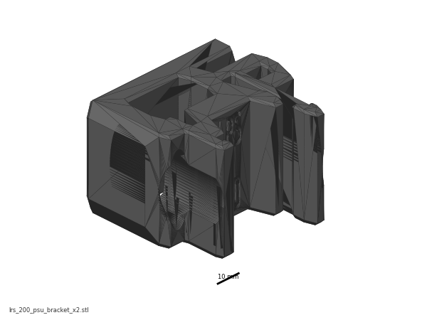
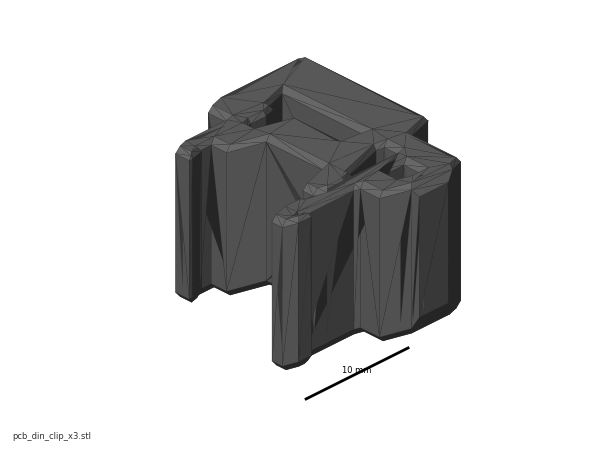
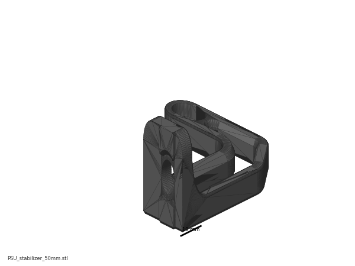
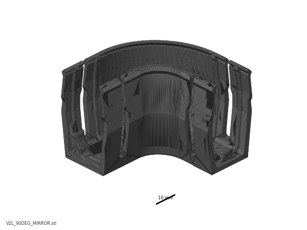
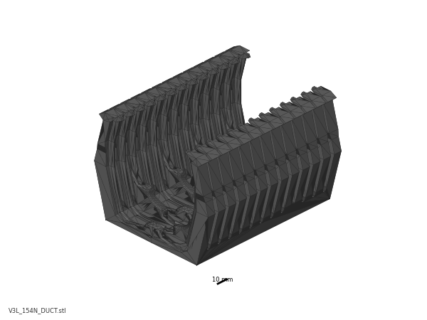
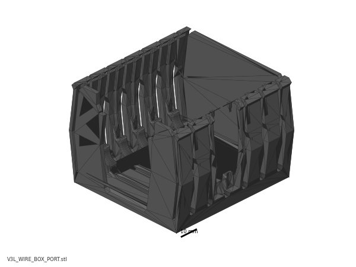

Chapter 09 — Electronics bay¶
One page per step
Read this chapter one step per page — big pictures, prev/next, and the same tick marks. This page is the whole chapter in one scroll.
Fits out the space under the deck panel: two DIN rails and the two printed B11 conduits that replace LDO's five wire ducts, the Meanwell 24 V PSU, the Omron SSR, the Leviathan mainboard carrying the Raspberry Pi 4B, the Nitehawk USB adapter, the mains inlet and WAGO blocks, and both endstops. Everything is mounted and nothing is wired — that unlocks Ch 10, which is one continuous harness job ending at Checkpoint #1.
What you're building in this chapter. The bay is the space under the deck panel, and this chapter fits it out without connecting a single wire. Two DIN rails — the standard 35 mm slotted steel rail that industrial gear clips onto — run left to right across the deck. Two printed conduits from batch B11 carry the harness Ch 10 will lay in: a DC loop round both rails, and a separate AC conduit that joins the mains WAGO bus, the SSR, the PSU and the bed-lead hole. They replace LDO's five PVC wire ducts (layout v3). On the rear rail go the PSU (the Meanwell supply that turns mains into the 24 V everything runs on) and the SSR (a solid-state relay: the contactless electronic switch that lets a low-voltage board turn the mains bed heater on and off). On the front rail go the Leviathan — this kit's mainboard, driving all five steppers, both heaters, the fans and the endstops, with the Raspberry Pi bolted on top of it — and the USB adapter that terminates the toolhead umbilical. Round the rear frame go the IEC inlet module (socket, switch and fuse in one) and three WAGO lever connectors that distribute live, neutral and earth. Both endstops — the nozzle probe that sets Z zero and the XY endstop PCB in its pod on the gantry — are built and mounted here too. Two bed-extrusion parts go above the deck, under the plate: the nozzle probe, on the right extrusion with its pin in the plate's rear cut-out, and the bed WAGO breakout on the left one, where the plate's own three leads end.
Left and right in this chapter are always the printer's own — the way you would say them standing at the front of the upright machine, display towards you. With the printer on its head, work from the printer's rear (the edge the deck notch points to — 09.4 — with the A/B motors hanging from the gantry's rear corners above it) and look down into the bay: the front edge is far from you, and your left is the printer's left. That is exactly the view in LDO's placement photo (display at the top of the frame) and in the manual's p.169/p.171 insets (labelled Front at the top). Stand at the front of the inverted printer instead and everything below is mirrored — and the bay is not symmetric.
Time: 3.0–4.5 h hands-on, first build (survey §7.2, plus the B11 conduits).
Sessions: 8 × ~30 min (first-build estimate; each Pause: line carries its own segment minutes).
Prerequisites:
- Ch 01–03. Frame squared, deck panel and deck supports in (manual p.28–30), build plate on with its three leads loose above the deck, none through it (Ch 03 Step 03.14).
- Ch 06. Gantry installed — step 09.33 mounts the XY endstop pod to it.
- Ch 08. The USB-adapter stack bagged at Step 08.64 is clipped on at 09.25.
- Batch B07 — Electronics bay + lighting. Plate B07-P1 carries
power_inlet_IECGS_1mm(moved out of B08 — index correction #11); the manual fits the inlet panel at p.156/167, i.e. in this chapter, so B07-P1 must be printed before you start or steps 09.10–09.12 stall. The COB light-strip mounts on plate B07-P2 are not consumed here; they are Ch 10. No part of B08 is needed in this chapter. - Ch 08's insert pass (optional). The inlet panel and the bed WAGO mount both need inserts before assembly (survey §5.2 W3); do them in the same iron session as Steps 08.3–08.7 so Steps 09.10 and 09.34 start with a confirm, or set them in-step there instead.
- Batch B11 — Bay ducting, all five plates. B11-P4 and B11-P5 print after the kit-day bay measurements (B11.10). An A/B motor lead that measures short at B11.9 gets a longer replacement lead; layout v3 stays. The
⚠ LDO layoutnotes below are only for a build without B11.
Tools
- 2.5 mm flat-blade screwdriver (supplied — this is the tool for every plug-type terminal in the bay)
- PH1 (M2 self-tapping) and PH2 (PSU and SSR terminals) screwdrivers
- Hex 2 / 2.5 / 3 mm
- Soldering iron + brass M3 heat-set tip
- Hacksaw or fine-tooth saw + file (DIN rail), side cutters or a fine saw (PVC wire duct, LDO layout or the fallback middle run only)
- Steel rule ≥300 mm, marker, digital caliper
- Multimeter (used properly in Ch 10; keep it on the bench from now on)
- Ferrule crimp tool, square, for VE0508: staged at 09.35, used only if a lead is re-terminated in Ch 10
Consumables: 3M VHB tape (supplied, for the printed conduits), IPA + lint-free cloth, masking tape and marker for labelling.
Printed parts
Parts arrive in the bins named below (see the bin map in print/README.md#bins); check the bin label's list before you start. Every B11 lid stays bagged in 09-ducts: the AC lids close at Ch 10 Step 10.80, the DC lids before the first panel in Ch 11.
| Looks like | STL | Bin | Qty | Colour |
|---|---|---|---|---|
 |
Electronics_Bay/lrs_200_psu_bracket_x2 |
09-bay | 2 | Black |
 |
Electronics_Bay/wago_221-415_mount_3by5 |
09-bay | 1 | Black |
 |
Electronics_Bay/pcb_din_clip_x3 |
09-bay | 1 file = 3 clips (spares — kit supplies 4) | Black |
 |
Electronics_Bay/PSU_stabilizer_50mm |
09-bay | 1 — fit only if needed, see 09.16 | Black |
 |
Nitehawk-SB-V2/usb_adapter_mount_partial_cover |
09-bay | 1 | Black |
 |
Skirts/power_inlet_IECGS_1mm |
09-bay | 1 (batch B07-P1) | Black |
 |
B11 DC loop, 09.6: CMD_V3_1H_154mm_DUCT ×2, CMD_V3_1H_90DEG ×2, V2L_90DEG_MIRROR, V2L_58mm_DUCT ×3, V2L_130mm_DUCT, V2L_70mm_DUCT, CMD_Remix-V3_DUCT-2B_45deg ×2, V3L_10mm_DUCT |
09-ducts | 13 | Black |
 |
B11 middle run, 09.6: V3L_154N_DUCT ×2, V3L_T_REG_N ×2, or B11's fallback set |
09-ducts | 4 | Black |
 |
B11 AC conduit, 09.36: V3L_WIRE_BOX_PORT, V3L_90DEG_R15 ×2, V3L_34mm_DUCT_HOLE, CMD_V3_1H_T_SHORT, V3L_10mm_DUCT ×2, CMD_Remix-V3_DUCT-1M_ENDCAP ×2 |
09-ducts | 9 | Black |
Supplied printed by LDO — do not print these: Leviathan Bracket Left ×1, Leviathan Bracket Right ×1, NH Adapter Mount ×1, DIN Clip ×4, LDO Nozzle Probe ×1, Bed WAGO Mount ×1. src
Hardware (chapter totals)
| Fastener / part | Qty | Note |
|---|---|---|
| DIN rail, 35 mm W, slotted | 2 | length not stated by the manual or LDO — (verify on bench) |
| DIN rail plastic end cap | 4 | 2 per rail |
| PVC wire duct, 20 W × 25 H | 5 | LDO layout only (3 across, 2 front-to-back). Layout v3 uses one, as the middle run, only if B11.10's gap row failed. Cut lengths (verify on bench) |
| M5×10 BHCS | 8 | 4 DIN rails, 2 mains WAGO mount, 2 bed WAGO mount |
| M5 T-nut | 4 | 2 mains WAGO mount, 2 bed WAGO mount (verify on bench for the bed WAGO mount) — the 4 DIN-rail T-nuts are placed in Ch 02 Step 02.11, 0 new here |
| M4×6 BHCS | 6 | 4 PSU brackets (verify), 2 SSR to its metal bracket |
| M3×8 SHCS | 8 | 4 Leviathan to brackets (verify), 2 inlet panel, 2 XY endstop PCB |
| M3×6 BHCS | 2 | 2×2 XH splicer PCB to the bed WAGO mount |
| M3×10 FHCS | 0 | p.156's two fix the filtered inlet; the IEC-GS module snaps into power_inlet_IECGS_1mm on its 1 mm tabs, no screws (CAD, STL) |
| M3×25 SHCS | 2 | nozzle probe to the bed extrusion — not the manual's M3×20 |
| M3×30 SHCS | 0: bagged with the pod at Step 05.46 | 2 fitted at 09.33, XY endstop pod to the gantry (manual p.164); counted in Ch 05's table |
| M3 T-nut | 4 | 2 inlet panel, 2 nozzle probe |
| M2×10 self-tapping | 8 (LDO's bag holds 24) | 4 DIN clips to Leviathan brackets (09.20), 2 the USB adapter's DIN clip (09.25), 2 Z endstop PCB (09.28) — the adapter stack itself is held by 3× M3×10 SHCS fitted in Ch 08 Step 08.64 |
| M3×5×4 heat-set insert | 5: 3 inlet panel + 2 bed WAGO mount | inlet panel: 1 in the rail's bottom face for the bottom-panel hinge (Ch 11), 2 in the cut-out for the p.222 belt guard (three Ø4.7 bores in power_inlet_IECGS_1mm.stl; p.156 draws five because the filtered variant adds two for its inlet screws); the mains WAGO mount has none, only two M5 holes |
| Meanwell LRS-200-24 PSU | 1 | 115/230 V selector switch on the side |
| Omron G3NB-210B-1 SSR | 1 | |
| DIN rail mount bracket for SSR, metal | 1 | off-the-shelf metal; there is no printed SSR mount |
| AC inlet, integrated switch & fuse | 1 | one module — not the manual's separate inlet + rocker |
| WAGO 221-415 (5-way) | 3 | mains distribution, L / N / PE |
| WAGO 221-412 (2-way) | 2 | bed WAGO mount |
| LDO Leviathan mainboard | 1 | |
| Leviathan Bracket Left | 1 | LDO-supplied printed |
| Leviathan Bracket Right | 1 | LDO-supplied printed |
| DIN Clip | 3 | 2 Leviathan brackets, 1 USB adapter; LDO ships 4, the 4th is a spare (LDO printed-parts guide) |
| Raspberry Pi 4B | 1 | reseller-optional line item |
| Raspberry Pi heatsink | 1 | |
| Pi standoff — from the Leviathan box | 4 | (verify on bench) |
| Raspberry Pi 3/4 HAT power adapter — from the Leviathan box | 1 | the Pi 5 adapter stays bagged (verify on bench) |
| XY endstop PCB | 1 | |
| Z endstop PCB | 1 | |
| 2×2 XH splicer PCB | 1 | bed thermistor breakout |
| LDO Nozzle Probe, collar pre-pressed | 1 | LDO-supplied printed; the collar is part of it (verify on bench) |
| Nozzle probe shaft, 5 mm | 1 | |
| M3×2 set screw | 1 | nozzle-probe collar, threadlocker pre-applied |
| Bed WAGO Mount | 1 | LDO-supplied printed |
Read first
- Remove every voltage-selection jumper from the Leviathan before it goes anywhere near the rail (step 09.19). Mixing voltages on the shared 24 V supply permanently destroys the controller and whatever is plugged into it. Jumpers go back in Ch 10, one at a time, after each component's voltage is confirmed. src
- Nothing is wired in this chapter. Mains wiring is the one step in this build that can kill you, and it is done as one deliberate sequence in Ch 10 that ends at LDO's Checkpoint #1 — continuity within each colour group, no continuity between L, N and PE, PSU selector confirmed, all with the cord unplugged. Leave the C13 cord in its bag. (survey §4.4 #8)
- The manual pages p.148–172 describe a different machine — a BTT Octopus, a mini12864, a 5 V PSU and a separate Pi bracket. Use them for the DIN-rail technique and the mounting geometry only; every part that differs carries a
⚠callout at its step. src - Do not close the bay. Skirts and the bottom panel go on in Ch 11, only after Checkpoint #1 passes. Fitting them now costs an hour of re-opening plus the safety check you skipped (survey §5.2 W8).
- Test-fit every roll-in T-nut. Extrusion and T-nut tolerances on this kit are tight; a forced nut galls the slot. src
- Bench-only work, good for a short session: 09.10 and 09.34's inserts, 09.14–09.15 (PSU selector and brackets), 09.17 (SSR on its bracket), 09.19–09.23 (Leviathan brackets, jumpers, Pi, HAT adapter), 09.25 (USB-adapter clip) and 09.27–09.29 (nozzle probe) need no printer. If you did the two heat-set jobs in Ch 08's iron session, 09.10 and 09.34 start with a confirm.
Sources for this chapter:
- Voron 2.4r2 assembly manual, p.148–172 — mounting geometry and DIN technique only; the boards on those pages are a different machine. Pinned at commit
de7e89d. p.28–29 supply the deck and DIN-rail pages - LDO wiring guide (Rev D) — the placement this chapter actually builds: General Placement, DIN rails and wire ducts, Preparing the inlet, Preparing the PSU, Preparing the mainboard, Assembling the nozzle probe, Wiring the bed heater, Checkpoint #1
- LDO Build Notes § Voron 2.4 build FAQ — every page in p.148–172 that this kit skips or replaces
- LDO Leviathan V1.3 board guide — voltage-selection jumpers and Pi mounting (link-only; no licence)
- LDO printed-parts guide (Rev D) and LDO 350 Rev D BOM — which brackets to print, what the kit supplies
- Nitehawk-SB V2 repo — the USB adapter stack and its grounding wire
- LDO XY-endstop repin guide — connector order on the XY endstop PCB
- Mirrored images in this chapter are LDO Motors' (docs.ldomotors.com, LDOVoron2, Nitehawk-SB V2), used with attribution; see
assets/remote/09-electronics-bay/SOURCES.txt
Video coverage (Steve Builds, pre-release LDO kit — differs from Rev D+): Part 5 @2:47:07 (+21m), Part 6 @1:30:45 (+12m), Part 7 @0:05:08 (+4m), Part 7 @0:24:27 (+9m), Part 7 @0:31:06 (+5m), Part 7 @0:35:54 (+20m), Part 7 @0:59:20 (+12m), Part 8 @0:31:02 (+23m), Part 8 @1:54:21 (+21m)
Step 09.1 — Read the end state¶
What you're looking at: The bay is the space under the deck panel where every electronic part lives. Two DIN rails, the 35 mm steel top-hat rail industrial gear clips onto, run across it: boards on the front rail, power on the rear.
Parts: none.
Do: Look at the render: the two rails and their geometry are right for your kit, even though three of the four components pictured are wrong. Nothing is fastened to the acrylic except the wire ducts.
 Check
Check
The parts on your bench are LDO's Leviathan, LRS-200-24 and Omron SSR, not the manual's Octopus, 5 V PSU and Pi bracket.
Source: Voron manual p.148 · LDO wiring guide § General Placement · Video: Part 7 @0:05:02
Step 09.2 — Read the placement you are actually building¶
What you're looking at: The layout you actually build, not the one drawn. Front rail: Leviathan with the Pi on it, and the USB adapter. Rear rail: the SSR switching the mains bed heater, and the PSU making 24 V. Rear frame: mains WAGO blocks and the IEC inlet.
Parts: none.
Do: Match the bay against LDO's placement photo S0General_Placement.jpg. Front rail: Leviathan and Pi, USB adapter beside it. Rear rail: SSR left, PSU right, terminal block facing the SSR. Rear-left: inlet panel against the Z-motor mount, mains WAGO right of it.
 Check
Check
You have that photo open on a phone or second screen. You will check the finished bay against it at 09.36.
Helper: Holds LDO's placement photo up and calls out each match: Leviathan, Pi, USB adapter, SSR, PSU and inlet.
Caution
Rev D+ / LDO: the manual shows a Raspberry Pi on its own bracket, a BTT Octopus, and a 5 V PSU. Your kit has none of those: the Pi mounts on the Leviathan, the Leviathan replaces the Octopus, and the Leviathan supplies the Pi's 5 V instead. src · wiring guide § General Placement
Source: Voron manual p.149 · LDO wiring guide § General Placement · image S0General_Placement.jpg · LDO Build Notes § Voron 2.4 build FAQ
Step 09.3 — Turn the printer over and pre-load the rear T-nuts¶
What you're looking at: The bay is on the underside of the machine, so this chapter happens with the printer inverted. The two M3 T-nuts go in now because once the inlet panel is against that slot, no nut can be fed in behind it.
Parts:
- M3 T-nut ×2
Do:
- Strap the gantry at the top, or clamp the four Z belts.
- Take the flex plate off and invert the printer onto a blanket, two people.
- Drop two M3 T-nuts into the rear extrusion's upward slot.
 Check
Check
Printer stable on its top, gantry strapped with no load on the belts, two M3 T-nuts free to slide in the rear slot.
Helper: Steadies the second side of the frame as it rolls onto the blanket, on a count of three.
Source: Voron manual p.166 · LDO wiring guide § Installing the DIN rails and wire ducts
Step 09.4 — Verify the deck panel before you drill anything into the layout¶

What you're looking at: The deck panel separates the print chamber above from the bay below; the DIN rails bolt through it into the bed extrusions. Measure its thickness: the deck supports come in 3 mm and 4 mm versions, and the wrong pair leaves the panel flexing.
Parts:
- reused: the deck panel
Do: Confirm the notch faces the back and the rear wire opening is clear. Caliper the edge: the BOM lists 469 × 469 × 3 mm, LDO's guide assumes 4 mm, and the deck supports must match what you measure.
 Check
Check
Notch to the back. Wire opening unobstructed. Deck thickness recorded, and the deck supports fitted in Ch 02 are the matching variant.
Helper: Reads the caliper at the deck edge aloud and writes the thickness down.
Caution
Rev D+ / LDO: if Ch 02 fitted deck_support_4mm_x8 and your panel calipers at 3 mm, swap them for deck_support_3mm_x8 now — the deck is about to carry the DIN rails and everything on them. src
Source: Voron manual p.28 · LDO wiring guide § Installing the DIN rails and wire ducts · LDO 350 Rev D BOM
Step 09.5 — Fit the two DIN rails, running left to right¶

What you're looking at: The two rails: 35 mm slotted steel top-hat, cut to length. Everything electronic clips onto one of these, so a board can slide along or lift off without touching the deck. They run left to right across both bed extrusions, one screw into each.
Parts:
- DIN rail ×2
- DIN rail plastic end cap ×4
- M5×10 BHCS ×4
- reused: the four deck T-nuts
Do:
- Slide each deck T-nut directly under one of the deck panel's four holes.
- Lay each rail across both extrusions over two holes, front rail and rear rail.
- Bolt down with M5×10 BHCS, snug, then cap the ends.
 Check
Check
Both rails parallel, left-to-right, two screws each through the deck holes, inside the deck edges, clear of the Z belts, four end caps on.
Caution
Rev D+ / LDO: no cut length is published for a 350's rails — (verify on bench). Cut both the same, keep them inside the deck panel, and use p.29's escape hatch: if a rail slot does not land on a T-nut, shorten the rail by a few mm rather than moving the nut off the extrusion.
Source: Voron manual p.29 · LDO wiring guide § Installing the DIN rails and wire ducts · Video: Part 2 @0:56:00
 Good stopping point · ~30 min since the last one
Good stopping point · ~30 min since the last one
printer on its top, rear T-nuts pre-loaded, deck panel verified, both DIN rails bolted through the deck holes and capped. Nothing is laid on the deck or clipped to a rail yet. Leave the printer where it is if you can; standing it back up costs you the T-nut access.
Step 09.6 — Lay the printed DC conduit¶

What you're looking at: Layout v3: two printed conduits in place of LDO's five PVC ducts. The DC loop, drawn black, circles both rails with a narrowed middle run between them. It stays loose until 09.36, once the boards it must clear are on. Overlay positions are approximate.
Parts:
CMD_V3_1H_154mm_DUCT×2CMD_V3_1H_90DEG×2V2L_90DEG_MIRROR×1V2L_58mm_DUCT×3V2L_130mm_DUCT×1V2L_70mm_DUCT×1CMD_Remix-V3_DUCT-2B_45deg×2V3L_10mm_DUCT×1V3L_T_REG_N×2V3L_154N_DUCT×2- consumable: masking tape
Do:
- Dry-lay the DC loop against the overlay, every joint pushed closed.
- Mark each joint and run end on masking tape on the deck.
- Leave the loop there; VHB, lids and AC parts stay in the bin.
 Check
Check
One closed loop, joints marked, round hole uncovered, notch open wide enough for the DC bundle, no motor or plug touched. Nothing stuck down.
Helper: Writes each joint's mark on the masking tape as the adult pushes the pieces closed.
 Tip
Tip
Overlay labels: 58c, 130c, 70c and 10c are the straights of that length; FL 90 is V2L_90DEG_MIRROR; T (N) is V3L_T_REG_N; 45 is the 45° pair.
Middle run
fit it only if B11.10's gap row passed (verify on bench). Otherwise fit stock CMD_V3_1H_T_REG in place of each narrowed T, and butt LDO's PVC middle duct against both T stems (verify on bench). Where B11's fallback 82 mm straight goes is not drawn yet. B11 options
LDO layout
cut five PVC ducts instead: three left to right, ahead of the front rail, between the rails and behind the rear one; two front to back down the sides. Lengths are not published (verify on bench); keep the offcuts. LDO § DIN rails and wire ducts
Source: review/2026-09-23-bay-mods/layout-v3/layout-v3.md · B11 — Bay ducting · MSS duct remix, Printables 502306, after RyanDam's Cable Management Duct, GPL-3.0 · LDO wiring guide § Installing the DIN rails and wire ducts · image S0_Din_Raill.jpg · Video: Part 7 @0:55:08
Step 09.7 — Learn the DIN clip motion once¶
What you're looking at: A DIN clip is the sprung foot that grips the rail: one side a fixed hook, the other a spring latch. Every clipped component in this chapter goes on the same way, and pressing one on flat-first breaks the latch.
Parts:
- one spare printed
pcb_din_clip×1
Do: Practise on a spare clip: hook the fixed side over one rail edge, rotate the part down flat with that hook engaged, then press until the sprung side snaps over the other edge.
 Check
Check
The clip sits square on the rail, does not rock, and slides along the rail with firm thumb pressure but not under its own weight.
Helper: Practises hook, rotate and snap on the spare clip until it clicks on first time.
Source: Voron manual p.168 · LDO wiring guide § Installing the DIN rails and wire ducts · Video: Part 7 @0:28:22
 Good stopping point · ~25 min since the last one
Good stopping point · ~25 min since the last one
both DIN rails on and the DC loop dry-laid on its tape marks, not stuck; VHB, lids and the AC parts wait for 09.36. A piece knocked out of place goes back to its marks; slide the middle run aside if a board needs room to clip on, since 09.36 re-centres it. Nothing is clipped to a rail yet. Leave the printer where it is if you can; standing it back up costs you the T-nut access.
Step 09.8 — Do not build the Pi bracket¶
What you're looking at: A deliberate skip. The manual mounts the Raspberry Pi on its own printed bracket because its reference machine uses a separate controller board; the Leviathan has a dedicated Pi area with its own standoffs, so both pages are dead here.
Parts: none.
Do: Skip both pages. Put the Pi aside for step 09.22.
 Check
Check
No raspberrypi_bracket or beefy_raspberry_bracket in your printed-parts bin: the print plan never printed them.
Caution
Rev D+ / LDO: SKIP manual p.150–151. LDO's note on p.150 points at the Beefy Raspberry Pi Mount and then says "it does not apply for rev D kits" — the Leviathan has a dedicated Pi mounting area with its own standoffs. src
Source: Voron manual p.150 · Voron manual p.151 · LDO wiring guide § General Placement · LDO Build Notes § Voron 2.4 build FAQ
Step 09.9 — Do not fit a 5 V PSU¶
What you're looking at: Another skip, for a related reason: the manual's machine carries a second, 5 V power supply just to run the Pi. The Leviathan generates the Pi's 5 V itself, so this build has exactly one PSU in it.
Parts: none.
Do: Skip both pages. There is no RS25-5 in the kit and no space allocated for one.
 Check
Check
No RS-25-5 or second supply in the kit boxes; the Pi power lead and 3/4 HAT adapter are bagged for 09.23.
Caution
Rev D+ / LDO: SKIP manual p.152 and p.172 — "The kit does not use a 5V PSU." The Leviathan supplies the Pi's 5 V through the GPIO power adapter fitted at 09.23. This also removes manual p.190 later in the build. src
Source: Voron manual p.152 · Voron manual p.172 · LDO wiring guide § Preparing the power supply unit · LDO Build Notes § Voron 2.4 build FAQ
Step 09.10 — Heat-set the power inlet panel¶

What you're looking at: The inlet panel is the printed plate that fills a cut-out in the rear skirt and carries the mains socket. Heat-set inserts give the plastic metal threads: one for the bottom-panel hinge and two for the belt guard, both fitted in Ch 11.
Parts:
power_inlet_IECGS_1mm×1- M3×5×4 heat-set insert ×3
Do: If Ch 08's insert pass did this panel, confirm and move on. Otherwise, at your ASA insert temperature, press one insert into each of the three bores, square and flush: one in the rail, two in the curved cut-out.
Check
Every insert flush or a hair below, none tilted, no bulged plastic around a boss.
Caution
Rev D+ / LDO: the manual's part is power_inlet_filtered. Yours is power_inlet_IECGS_1mm — LDO ships the 1.0 mm AC inlet with an integrated switch, so the printed panel is a different file with a different cut-out. src · Rev D printed parts guide
Source: Voron manual p.156 · LDO wiring guide § Preparing the inlet · LDO printed-parts guide (Rev D) · LDO Build Notes § Voron 2.4 build FAQ
Step 09.11 — Fit the combined IEC inlet module¶

What you're looking at: The IEC inlet is where mains enters the machine: one module combining the C14 socket, the on/off rocker and the fuse holder. It is live the moment a cord is in, so nothing touches its spade terminals until Ch 10.
Parts:
- AC inlet with integrated switch & fuse ×1
Do: Press the module into the panel from the outside, earth pin at the top when the printer is upright, switch facing out, until its tabs snap behind the panel wall. No screws. Connect nothing to its spade terminals.
Check
Module square in the panel, no rocking, fuse drawer accessible, switch rocks freely. Nothing wired.
Caution
Rev D+ / LDO: the manual fits two parts here, a filtered inlet and a separate rocker switch; yours is one module containing inlet, switch and fuse. Check its factory wiring by eye only against LDO's inlet layout above: L fused, N direct, PE never switched or fused. Nothing lights up until Ch 10's first power-on. src
Source: LDO wiring guide § Preparing the inlet · image S2_inlet.jpg
Step 09.12 — Mount the inlet panel to the rear extrusion¶
What you're looking at: The panel hooks over the rear extrusion's slot and bolts to the two T-nuts from Step 09.3. Position matters twice: hard against the Z-motor mount so the rear skirt segments line up, and inside the footprint where the rear skirt lands in Ch 11.
Parts:
- M3×8 SHCS ×2
- reused: the two pre-loaded rear M3 T-nuts
Do:
- Hook the panel's lip over the rear extrusion's slot and start two M3×8 SHCS into the T-nuts, loose.
- Slide it against the rear-left Z-motor mount, then tighten. The WAGO block goes to its right.
Check
Panel flat against the extrusion, no gap at the lip, no overhang where the rear skirt lands in Ch 11, inlet reachable from outside.
Source: Voron manual p.167 · LDO wiring guide § Preparing the inlet · Video: Part 7 @0:59:57
Step 09.13 — Build and mount the mains WAGO block¶
What you're looking at: A WAGO 221 is a lever-operated push-in connector: lift the lever, push a stripped conductor in, drop the lever, and it is clamped. These three 5-way blocks are the mains distribution nodes, one each for live, neutral and protective earth.
Parts:
wago_221-415_mount_3by5×1- WAGO 221-415 (5-way) ×3
- M5×10 BHCS ×2
- M5 T-nut ×2
Do:
- Snap the three WAGO 221-415 clamps into the mount, levers facing outward.
- Slide two M5 T-nuts into the rear extrusion's inner slot, right of the inlet panel.
- Hook the mount on and fasten with M5×10 BHCS.
Check
All three clamps seated with no step between clamp and mount, every lever free to lift, mount solid within reach of the inlet's leads.
Caution
Rev D+ / LDO: the manual titles p.165 "ALTERNATE MAINS DISTRIBUTION — WAGO". For this kit it is not an alternate — it is the only path. The BOM ships three 221-415 clamps, and Ch 10 uses them as the L / N / PE distribution nodes. src
Caution
Rev D+ / LDO: if your printed mount has insert bosses, heat-set them in the same pass as 09.10 — (verify on bench); the stock Voron part is snap-fit only.
Source: Voron manual p.165 · LDO wiring guide § Preparing the inlet · LDO 350 Rev D BOM
Good stopping point · ~30 min since the last one
Pi bracket and 5 V PSU correctly skipped, inlet panel heat-set and fitted with the IEC module, panel bolted to the rear extrusion, mains WAGO block built and mounted. Nothing is terminated and the C13 cord stays in its bag — do not connect anything to the inlet.
Step 09.14 — Set the PSU voltage selector to 115 V¶

What you're looking at: The PSU is the Meanwell LRS-200-24, which makes the 24 V that runs the motors, fans, boards and toolhead. It is not auto-ranging: a recessed slide switch selects 115 V or 230 V, and 115 V on 230 V mains destroys it.
Parts:
- staged: Meanwell LRS-200-24 PSU ×1
Do: Find the recessed slide switch on the side of the PSU, next to the yellow warning label. Push it to 115 V for US mains with the 2.5 mm flat screwdriver, while it is still easy to reach.
Check
Selector reads 115 V, or 120 V on units marked that way: either is the low-voltage position.
Caution
Rev D+ / LDO: LDO calls this out twice, in Preparing the Power Supply Unit and again in Checkpoint #1: "Flick the switch to the correct value before powering it on! Failing to do so can destroy the power supply!" Ch 10 re-checks it before the first power-on. src
Tip
EU builds may get a Meanwell RSP-200-24 instead: PFC, universal input, no switch. If yours has no selector, that is the unit and nothing needs setting. src
Source: LDO wiring guide § Preparing the power supply unit · image psu_switch.jpg · Video: Part 8 @0:40:16
Step 09.15 — Fit the printed DIN brackets to the PSU¶
What you're looking at: The two printed brackets are the PSU's entire mounting system. They screw into the factory M4 holes on its solid, unvented face and give it two DIN hooks. Screws longer than M4×6 reach inside a 200 W mains supply.
Parts:
- Meanwell LRS-200-24 PSU ×1
lrs_200_psu_bracket_x2×2- M4×6 BHCS ×4 (verify on bench)
Do: Sit the two brackets on the PSU's long face, the one without vents, over the factory M4 holes, and drive M4×6 BHCS. Both must face the same way so their DIN hooks line up. No longer screws.
Check
Both hooks parallel and coplanar, terminal block on the edge that will face the SSR. On a rail offcut, both hooks engage at once.
Caution
Rev D+ / LDO: the manual's "24 V PSU" here is a generic block. Yours is the Meanwell LRS-200-24 and these two printed brackets are the whole mounting system for it. src
Source: Voron manual p.153 · LDO wiring guide § Preparing the power supply unit · LDO 350 Rev D BOM · Video: Part 8 @0:37:04
Step 09.16 — Clip the PSU onto the rear rail¶
What you're looking at: Hook, rotate, snap: the motion from Step 09.7, now with the heaviest component in the bay. Position is set by the dry-laid DC loop's right T and by access: a PH2 driver must reach every terminal screw later, with the bay full.
Parts:
- reused: the PSU on its brackets
Do: Hook, rotate and snap the PSU onto the rear DIN rail at the bay's right, terminal block facing left. Slide it left until its front-right corner clears the dry-laid right T's rear fillet by 2 mm, then stop.
Check
Both brackets latched, no rocking, front-right corner 2 mm or more from the right T's rear fillet, every terminal screw reachable with a PH2 driver.
Layout v3
stop at 2 mm. The PSU's left end must stay 3 mm or more from the SSR run's open end, which 09.36 checks (verify on bench). If the psu row at B11.10 failed, that run is one 10 mm piece shorter and the PSU has more room.
Caution
Rev D+ / LDO: SKIP the bottom half of p.169 — the L-shaped support bracket with its M5 T-nut, M5×10 BHCS and M4×6 BHCS. LDO: "PAGE 169 SKIP. The kit does not use a support bracket." The two printed DIN brackets carry the PSU on their own. src
Caution
Rev D+ / LDO: the print plan prints PSU_stabilizer_50mm anyway as a 4 g insurance part. Fit it only if the PSU visibly sags or rocks on the rail; otherwise it stays in the spares bin. src §6
LDO layout
no shift. Slide the PSU clear of the right-hand PVC duct, where LDO's placement photo shows it, so a PH2 driver reaches every terminal screw. LDO § General Placement
Source: Voron manual p.169 · LDO wiring guide § General Placement · LDO Build Notes § Voron 2.4 build FAQ · print plan §B08 · review/2026-09-23-bay-mods/layout-v3/layout-v3.md § What changed, bench checks 5 and 6
Step 09.17 — Fit the SSR to its metal DIN bracket¶
What you're looking at: The SSR, a solid-state relay, is a contactless electronic switch: DC on its input terminals switches the mains through its load terminals. Terminals 1 / 2 are LOAD, 3 + / 4 − are INPUT, and swapping them is the error LDO calls catastrophic.
Parts:
- Omron G3NB-210B-1 SSR ×1
- metal DIN rail mount bracket ×1
- M4×6 BHCS ×2
Do:
- Find the stamped metal bracket in the hardware bags.
- Lay the SSR on it, two M4×6 BHCS through its mounting ears.
- Read the label before tightening: which pair is LOAD, which is INPUT, LED beside terminal 3.
Check
SSR square on the bracket, both screws tight, the bracket's spring latch free to move, and you can say which pair is load.
Source: Voron manual p.157 · LDO wiring guide § General Placement · Video: Part 8 @0:36:59
Step 09.18 — Clip the SSR onto the rear rail¶
What you're looking at: The bracket's spring latch holds the SSR on the rail and locks open so both hands are free. Orientation is the point of this step: control terminals facing the front rail, load terminals facing the rear, so no mains conductor crosses the bay.
Parts:
- reused: the SSR on its bracket
Do:
- Pull the latch open with the 2.5 mm screwdriver; it locks open.
- Hook it over the rear rail left of the PSU, release the latch, mind your fingers.
- INPUT to the front rail, LOAD to the rear.
Check
SSR latched square with no rocking, both terminal pairs reachable with a PH2 driver, roughly 30 mm of clear rail between SSR and PSU.
Caution
Rev D+ / LDO: the SSR body is stamped "EARTH THE MOUNTING RAIL". Your DIN rails bolt through the deck panel into the aluminium bed extrusions (09.5), so they are earthed once the frame PE lands in Ch 10. Verify rail-to-frame continuity with the multimeter at Checkpoint #1 — do not assume it. src
Tip
LDO flags the SSR wiring as "critical — an incorrect connection can cause catastrophic damage". Getting the orientation right now makes Ch 10 unambiguous (survey §4.4 #8).
Source: Voron manual p.171 · LDO wiring guide § Checkpoint #1
Good stopping point · ~30 min since the last one
PSU voltage selector confirmed at 115 V, PSU and SSR both on their DIN brackets and clipped to the rear rail. Mains terminals still bare; leave the PSU cover on and the cord bagged.
Step 09.19 — Strip every voltage-selection jumper off the Leviathan¶

What you're looking at: The Leviathan is this kit's mainboard: it drives all five steppers, both heaters, the fans and the endstops, and carries the Pi on top. The five headers arrowed here are its voltage-selection jumpers, each picking 5 V or 24 V for that output.
Parts:
- staged: LDO Leviathan mainboard ×1
- tool: a small pot or bag for the jumpers
Do: On an anti-static surface, pull all the voltage-selection jumpers, the four fan headers and the Z-probe voltage header, into a labelled bag taped to the bay wall. Do this before the board goes on the rail.
 Check
Check
Zero jumpers left in any voltage-selection header. Bag labelled and stored where Ch 10 will find it.
Helper: Counts the jumpers into the bag, five in all, and writes its label.
Caution
Rev D+ / LDO: LDO's rule, verbatim: "Remove all of the jumpers used for voltage selection prior to installation." and "Mixing voltage will permanantly damage the controller and attached components." Jumpers go back only in Ch 10, one component at a time, after each attached device's voltage is verified. src
Caution
Rev D+ / LDO: ignore manual p.174–178 entirely when you get there — that is Octopus jumper configuration. LDO: "Follow the instruction in the LDO guide for configuring the Leviathan controller board." src
Source: LDO Leviathan V1.3 board guide · LDO Build Notes § Voron 2.4 build FAQ
Step 09.20 — Fit DIN clips to the two Leviathan brackets¶
What you're looking at: Two LDO-supplied printed brackets, one for each short end of the board, each carrying a DIN clip. M2 self-tapping screws cut their own thread in ASA. Run one in and out a few times and the boss is stripped.
Parts:
- Leviathan Bracket Left ×1
- Leviathan Bracket Right ×1
- DIN Clip ×2
- M2×10 self-tapping ×4
Do: Sit a DIN clip on each bracket and drive two M2×10 self-tapping screws through the clip into the bracket with a PH1. Go slowly and stop the moment the head seats.
 Check
Check
Two bracket-and-clip assemblies, mirror images of each other, clips square and both hooks facing the same direction.
Helper: Holds each bracket steady on the bench while the adult drives the M2 screws.
Caution
Rev D+ / LDO: p.154 shows the Octopus bracket set and its siblings. You use Leviathan_bracket_set — supplied printed by LDO, do not print it — with two DIN clips. The assembly method on this page is the same; only the parts differ. src
Source: Voron manual p.154 · LDO wiring guide § Preparing the mainboard · Video: Part 7 @0:32:16
Step 09.21 — Bolt the Leviathan to its brackets¶
What you're looking at: The board bolts to those brackets at its corner mounting holes, the only place a PCB takes a screw without flexing. The two DIN hooks must end up coplanar: a twisted pair means only one clip engages the rail.
Parts:
- LDO Leviathan mainboard ×1
- reused: the two bracket assemblies
- M3×8 SHCS ×4 (verify on bench)
Do: Stand the two brackets clips-down on an anti-static surface. Lay the Leviathan face up across them, one short end on each. Drive M3×8 SHCS down through the corner holes, finger-tight plus a nudge.
 Check
Check
Components and connectors face up, brackets underneath. Board flat with no twist, the two DIN hooks coplanar. On a rail offcut, both clips engage together.
Caution
Rev D+ / LDO: the manual's board is a dummy Octopus fastened with M3×6 BHCS. The Leviathan takes M3×8 SHCS through the LDO brackets. Confirm the screw seats without bottoming out before you drive all four. src
Source: Voron manual p.155 · LDO wiring guide § Preparing the mainboard
Step 09.22 — Heatsink and mount the Raspberry Pi 4B on the Leviathan¶
What you're looking at: The Raspberry Pi is the computer that runs Klipper; the Leviathan is only the motion controller it commands. The Pi mounts on the Leviathan's own standoffs, so its ports must be aimed clear of the Leviathan's connector banks before anything is bolted down.
Parts:
- Raspberry Pi 4B ×1
- Raspberry Pi heatsink ×1
- Pi standoff ×4 (verify on bench) — from the Leviathan box
- consumable: 32 GB SD card ×1
Do:
- Stick the heatsink on the Pi's SoC first.
- Screw the standoffs in, sit the Pi on them with USB and Ethernet facing outward, away from the connector banks, and fasten.
- Slide the SD card in now.
 Check
Check
Pi flat on all standoffs, Ethernet and one USB-A port clear of the Leviathan's headers, SD card seated, nothing shorting underneath.
Caution
Rev D+ / LDO: "Some ports of the Raspberry Pi may not be usable due to interference with the Leviathan ports." Check which ones you lose now, while you can still rotate the Pi, because Ch 10 needs the Ethernet port and Ch 12 needs a USB port for the toolboard. src
Source: LDO Leviathan V1.3 board guide · LDO wiring guide § General Placement · image S0General_Placement.jpg · Video: Part 7 @1:10:35 (differs: BTT Octopus + separate Raspberry Pi; this kit is a Leviathan with the Pi mounted on it)
Step 09.23 — Fit the Raspberry Pi 3/4 HAT power adapter¶
What you're looking at: This is how the Pi gets powered: a small adapter sits on its GPIO header and takes 5 V from a dedicated port on the Leviathan. The kit ships Pi 5 and Pi 3/4 versions, and they are not interchangeable.
Parts:
- Raspberry Pi 3/4 HAT power adapter ×1 (verify on bench) — from the Leviathan box
Do: Seat the 3/4 adapter onto the Pi's GPIO header in the orientation LDO's image shows, and connect its lead to the Leviathan's Raspberry Pi supply port. There is no USB-C brick in this machine.
 Check
Check
Adapter fully seated on the GPIO pins with no row offset. Lead reaches the Leviathan's Pi power port without tension.
Caution
Rev D+ / LDO: the kit ships adapters for both Pi 5 and Pi 3/4, and "the orientation differs" between them. You have a Pi 4B — use the 3/4 adapter. Fitting the Pi 5 adapter to a Pi 4 puts supply on the wrong pins. src
Caution
Rev D+ / LDO: this replaces manual p.190 as well ("the kit uses the Leviathan to supply the 5v power for the Raspberry PI"). src
Source: LDO Leviathan V1.3 board guide · LDO Build Notes § Voron 2.4 build FAQ · Video: Part 8 @1:55:00 (differs: BTT Octopus + separate Raspberry Pi; this kit is a Leviathan with the Pi mounted on it)
Step 09.24 — Clip the Leviathan and Pi onto the front rail¶
What you're looking at: Hook, rotate, snap for the third time, now with the Pi on the board. Biased left so the right-hand end of the front rail stays free for the USB adapter, high-current terminals facing the PSU so the 24 V wires run short.
Parts:
- reused: the Leviathan and Pi assembly
Do: Hook, rotate and snap the assembly onto the front DIN rail, biased left so the right-hand end stays free for the USB adapter. Keep the high-current terminal block facing the PSU.
 Check
Check
Both clips latched, board square, no part of the Pi or Leviathan touching a duct, the deck or the frame, every connector bank reachable.
Caution
Rev D+ / LDO: SKIP the manual's arrangement on p.170–171. LDO: "Refer to the wiring guide for Leviathan and electronics general placement." The manual puts a Pi and an Octopus on the same rail as separate items; you have one clipped assembly. src
Source: Voron manual p.170 · LDO wiring guide § General Placement · LDO Build Notes § Voron 2.4 build FAQ
 Good stopping point · ~30 min since the last one
Good stopping point · ~30 min since the last one
every voltage-selection jumper off the Leviathan and bagged, board on its brackets with the Pi and its HAT adapter, the whole stack clipped to the front rail. Do not put a jumper back: they go in one at a time in Ch 10.
Step 09.25 — Confirm the USB adapter stack and clip it¶

What you're looking at: The USB adapter is the bay-side end of the toolhead umbilical: 24 V goes in, and the toolhead cable comes out as a USB connection to the Pi. The V2 partial cover leaves one mounting screw bare on purpose, for the ESD ring terminal.
Parts:
- reused: the bagged USB adapter stack, three M3×10 SHCS and the partial cover
- DIN Clip ×1
- M2×10 self-tapping ×2 (verify on bench)
- Nitehawk grounding cable, long ×1 (verify on bench) — from the Nitehawk-SB V2 box
Do:
- Confirm the bagged stack: three M3×10 SHCS, and the partial cover.
- Fit a DIN clip to the base's back with the M2×10 self-tappers.
- Bolt the supplied grounding cable's ring terminal to the exposed mounting point.
 Check
Check
PCB captive, the 4-pin Micro-Fit 3.0 socket and USB connector both accessible, cover on, ring terminal on the one bare mounting point.
Caution
Rev D+ / LDO: the stack takes 3× M3×10 SHCS — LDO's Rev D Printed Parts Guide: "Use 3 M3x10 SHCS screws to attach the base, adapter PCB, and cover together." The M2×10 self-tappers are for the DIN clip only. If your stack has the V1 full cover, swap in usb_adapter_mount_partial_cover.stl rather than omitting the ground (survey §4.1 ⑤). src
Caution
Rev D+ / LDO: use the supplied grounding cable. LDO: "Be sure to use the supplied grounding cable since using larger O ring connectors may cause inadvertent shorting of the PCB boards."
Source: Nitehawk-SB V2 repo · LDO printed-parts guide (Rev D) · image usb_adapter_gnd.jpg
Step 09.26 — Clip the USB adapter to the front rail¶


What you're looking at: The CAD renders show the position. The adapter goes on the right-hand end of the front rail, the rail nearer the door, with its umbilical socket facing the right-hand duct run the umbilical follows from the notch, so nothing pulls sideways on the connector.
Parts:
- reused: the USB adapter assembly
Do: Clip it onto the right-hand end of the front DIN rail, beside the Leviathan, umbilical connector facing the right-hand duct run. Route the ground lead to the nearest frame extrusion and leave it hanging.
 Check
Check
Adapter latched and square. Umbilical socket faces the right-hand duct run, not the Leviathan. Ground lead reaches a frame extrusion with slack.
Caution
Rev D+ / LDO: this is the Rev D+ ESD path: extruder motor body → toolboard → umbilical → USB adapter → frame/earth. Skipping the frame end leaves the chain broken. LDO's procedure is the board doc § ESD Hardening (Ch 08 Step 08.53); ask in #ldo_motors only if your hardware differs. (survey §4.1 ⑤)
 Tip
Tip
The CAD bay layout is the 250 machine's; the rails are shorter than yours, but front/rear and left/right are the same.
Source: LDO wiring guide § General Placement · image S0General_Placement.jpg · CAD: Voron 2.4r2 STEP @ de7e89d
Step 09.27 — Confirm the collar in the LDO nozzle-probe body¶
What you're looking at: The nozzle probe is this kit's Z endstop, not a bed probe: a free-sliding 5 mm shaft in a printed body bolted to the frame, which the nozzle is driven down onto to find Z zero.
Parts:
- LDO Nozzle Probe, collar pre-pressed ×1
(verify on bench)
Do: Confirm the collar is fully home in its seat. If yours arrived loose, press it in with steady thumb or vice pressure, never a hammer, until it bottoms out.
 Check
Check
Collar flush and square in the body, no gap under its flange, printed part not split.
Helper: Looks under the collar's flange and says whether any gap shows.
Caution
Rev D+ / LDO: use LDO's own printed part, not the Voron nozzle_probe.stl — it is supplied printed in the kit and the print plan deliberately never printed either version. Ignore the manual's "remove flange & set screws" and lever-removal instructions: those are for a bare microswitch build. src
Source: Voron manual p.158 · LDO wiring guide § Assembling the nozzle probe · image z_stop_parts.jpg · LDO Build Notes § Voron 2.4 build FAQ
Step 09.28 — Fit the Z endstop PCB¶
What you're looking at: The Z endstop PCB is a small board carrying a D2F microswitch and a plug, so nothing is soldered. Its plunger sits under the shaft's bore: the shaft drops onto it, the switch clicks, and Klipper reads that as Z zero.
Parts:
- Z endstop PCB (D2F switch board) ×1
- M2×10 self-tapping ×2
Do: Sit the PCB against the printed body so the switch plunger is under the pulley bore. Drive two M2×10 self-tapping screws sideways through the switch's two holes into the printed part. PH1, slow, stop when seated.
 Check
Check
PCB solid, switch square under the bore, plunger free. Pressing the plunger gives a clean audible click and it returns fully.
Helper: Presses the switch plunger and says whether the click is clean and it springs back.
Caution
Rev D+ / LDO: p.160 is titled "ALTERNATE Z ENDSTOP" in the manual — for this kit it is the only path. LDO: "Use the LDO Z endstop printed part and PCB." Note it is two screws through the switch, not the four the manual's render shows. There is nothing to solder — the PCB carries a connector. src
Source: Voron manual p.160 · LDO wiring guide § Assembling the nozzle probe · image z_stop_install_3.jpg
Step 09.29 — Fit the 5 mm shaft and its retaining set screw¶
What you're looking at: The 5 mm shaft is the part the nozzle actually touches. The single set screw only has to stop it falling out. Any tighter and it clamps the shaft, and a shaft that will not drop under its own weight drifts Z zero.
Parts:
- nozzle probe shaft, 5 mm ×1
- M3×2 set screw ×1
Do:
- Drop the 5 mm shaft through the bore onto the switch plunger.
- Run the collar's set screw in until it just retains the shaft, still sliding freely.
- If unnotched, stop the screw short of the shaft.
 Check
Check
Released, the shaft drops freely and clicks the switch. Upside down, a notched shaft stays put, an un-notched one may slide.
Helper: Releases the shaft and says whether it drops freely and clicks the switch.
Caution
Rev D+ / LDO: LDO: "Remember to install one set screw into the pulley, but do not overtighten it… it should not be so tight as to impede the shaft from freely moving up and down." Follow only the 5 mm shaft part of p.159 — the soldered-connector half of the page does not apply to the PCB version. src
Source: Voron manual p.159 · LDO wiring guide § Assembling the nozzle probe · LDO Build Notes § Voron 2.4 build FAQ
Step 09.30 — Mount the nozzle probe on the bed extrusion¶


{kind=link}
{kind=link}
{kind=link}
{kind=link}
{kind=link}
{kind=link}
{kind=link}
{kind=link}
{kind=link}
{kind=link}
{kind=link}
{kind=link}
{kind=link}
{kind=link}
{kind=link}
{kind=link}
{kind=link}
{kind=link}
{kind=link}
{kind=link}
{kind=link}
{kind=link}
{kind=link}
{kind=link}
{kind=link}
{kind=link}
{kind=link}
{kind=link}
{kind=link}
{kind=link}
{kind=link}
{kind=link}
{kind=link}
{kind=link}
{kind=link}
{kind=link}
{kind=link}
{kind=link}
{kind=link}
{kind=link}
{kind=link}
What you're looking at: The probe sits above the deck, on the chamber side: the bed extrusions carry the plate, and the deck hangs under them. It bolts to the right extrusion's inner face, its pin standing in the plate's rear cut-out.
Parts:
- reused: the nozzle probe assembly
- M3×25 SHCS ×2
- M3 T-nut ×2
Do:
- Reach in between deck and plate: two M3 T-nuts into the right extrusion's inner slot
(verify on bench). - Probe on that face, pin away from the deck, M3×25 snug.
- Slide it until the pin stands in the plate's cut-out.
 Check
Check
A 1.5 mm hex key just fits between pin and plate. The pin clicks the switch and returns. Body square, connector reachable.
Helper: Slides the 1.5 mm hex key between pin and plate and says whether it just fits.
Caution
Rev D+ / LDO: the manual calls for M3×20 SHCS. LDO's nozzle probe needs M3×25 SHCS ×2 — the printed body is thicker. src
 Tip
Tip
Un-notched shaft? Bag and label it probe shaft — refit before 13.24.
Probe lead
it stays in the chamber until Ch 10. Layout v3 drops it through the rear notch at 10.34; LDO layout through the round deck hole. Nothing goes through the deck here.
Source: Voron manual p.161 · LDO wiring guide § Assembling the nozzle probe · image z_stop_final.jpg · LDO wiki build-plate mapping
{kind=link}
{kind=link}
 Good stopping point · ~30 min since the last one
Good stopping point · ~30 min since the last one
USB adapter stack confirmed and clipped, nozzle probe assembled (collar, PCB, 5 mm shaft) and mounted above the deck on the right bed extrusion's inner slot, pin in the plate's rear cut-out; the printer is still on its head. Nothing plugged in.
Step 09.31 — Do not build the soldered X/Y microswitches¶
{kind=link}
What you're looking at: A skip. The manual builds its XY endstops from two loose microswitches with soldered flying leads; this kit ships them as one small PCB with a single 4-pin connector, so there is nothing to cut, strip or solder.
Parts: none.
Do: Skip the page. No wire is cut, stripped or soldered here.
 Check
Check
Your XY endstop is one PCB with one 4-pin JST-XH connector, not two loose microswitches with flying leads.
Caution
Rev D+ / LDO: SKIP manual p.162 — "The kit uses the X/Y Endstop PCB board." Also skip the hall-effect option on p.163: this kit has no hall-effect endstops anywhere (LDO note on p.145). src
Source: Voron manual p.162 · LDO Build Notes § Voron 2.4 build FAQ
Step 09.32 — Fit the XY endstop PCB to the pod¶
{kind=link}
What you're looking at: The XY endstop PCB carries both the X and Y limit switches, which tell the machine where each axis physically ends and give G28 a repeatable origin. It bolts into the blue pod printed for Ch 05, which puts the switches in the toolhead's path.
Parts:
[a]_endstop_pod_D2F_switch×1- XY endstop PCB ×1
- M3×8 SHCS ×2
Do: Follow the left-hand option only. Seat the XY endstop board on the pod so both switches face the directions the toolhead and the frame will hit them, and fasten with two M3×8 SHCS.
 Check
Check
Board flat on the pod, both switches proud and clicking cleanly, connector accessible from below.
Helper: Presses both switches on the fitted board and says whether each one clicks cleanly.
Caution
Rev D+ / LDO: LDO: "Follow only the step for the XY Endstop board." Ignore the hall-effect half of the page. src
Caution
Rev D+ / LDO: check the cable labels before Ch 10. LDO documents a batch whose XY endstop cable is labelled "X Stop / Y Stop" instead of "XES / YES" and needs re-pinning. XY endstop repin guide
Source: Voron manual p.163 · LDO Build Notes § Voron 2.4 build FAQ · LDO XY-endstop repin guide
Step 09.33 — Mount the endstop pod to the gantry¶
{kind=link}
What you're looking at: The pod bolts up into the right-hand XY joint on two M3×30 SHCS, long enough to pass through the pod body; the M3×16 of p.106 cannot reach the joint through it. With the printer inverted the joint's underside faces up.
Parts:
- reused: the pod assembly
- M3×30 SHCS ×2
Do: Hold the pod against the underside of the right-hand XY joint, facing up with the printer inverted. Drive the two M3×30 SHCS bagged with it at 05.46 through it into the joint's two free holes.
 Check
Check
Pod solid with no rotation. Through full X and Y travel it fouls nothing: frame, Z rail, chain or toolhead.
Helper: Watches the pod while the adult moves the toolhead through X and Y, and calls out any touch.
Source: Voron manual p.164 · LDO Build Notes § Voron 2.4 build FAQ · Video: Part 6 @1:30:12
Step 09.34 — Build and mount the bed WAGO breakout¶
{kind=link}
What you're looking at: The bed WAGO mount is a small breakout above the deck, in the chamber under the plate, on the left bed extrusion. The plate's three short leads end here, so the plate lifts off from above; extension leads carry on below deck.
Parts:
- Bed WAGO Mount ×1 (LDO-supplied printed)
- M3×5×4 heat-set inserts ×2
- 2×2 XH splicer PCB ×1
- M3×6 BHCS ×2
- WAGO 221-412 (2-way) ×2
- M5×10 BHCS ×2
- M5 T-nut ×2 (verify on bench)
Do:
- Heat-set two inserts into the front face; let cool.
- Screw on the splicer PCB; snap in both WAGOs.
- Bolt it to the left bed extrusion's inner side slot, above the deck under the plate's rear half
(verify on bench).
Check
Inserts flush, splicer PCB solid, both levers free. Mount above the deck, clear of the plate underside; the plate's three leads reach it with slack.
Caution
Rev D+ / LDO: a Rev C+ addition with no manual page. LDO's build-plate mapping puts it above the deck on the left bed extrusion, so the plate detaches from the top: two 2-way WAGOs break out bed L and N, the splicer PCB the thermistor. Nothing goes below the deck here; terminating is Ch 10. src
Source: LDO wiring guide § Wiring the bed heater · LDO wiki build-plate mapping · LDO 350 Rev D BOM · image bed_wago_mount.jpg
{kind=link}
Good stopping point · ~25 min since the last one
XY endstop PCB in its pod and the pod on the gantry, bed WAGO breakout built and mounted above the deck on the left bed extrusion. The plate's three leads reach it with slack; none of them terminated.
Step 09.35 — Stage the mains-safety hardware, then stop¶
(no image — see text)
What you're looking at: No picture; this is a laying-out step. A ferrule is a metal sleeve crimped over a stranded conductor so it enters a screw terminal as one solid pin. Every stranded conductor entering a screw terminal here gets one.
Parts:
- consumable: VE0508 ferrule ×5
- staged: C13 power cord ×1
- staged: FRAME PE cable ×1 — from the Cable Kit box
- tool: ferrule crimp tool
- tool: cable tags
Do:
- Lay out five VE0508 ferrules, the crimp tool, the ring terminal and tags.
- Find the frame PE point between the WAGO mount and the notch.
- Find the inlet's strain relief; confirm the C13 cord is bagged.
Check
Five ferrules present and the crimp tool to hand. A clean metal-to-metal frame PE point identified. Cord bagged and the inlet switch off.
Caution
Rev D+ / LDO: no wiring happens in this chapter and no plug goes in a socket. LDO: "Mains wiring should only be performed by certified personnel…" Ch 10 gates on Checkpoint #1 before anything is switched on: cord unplugged, continuity within each colour group, no continuity between L, N and PE, PSU selector at 115 V. src
Source: LDO wiring guide § Checkpoint #1 · survey §7.5
Step 09.36 — Stick down both conduits, then check the bay¶
{kind=link}
What you're looking at: Both conduits are bonded last because they must clear the boards, the WAGO bus and the SSR. Then a comparison pass against the v3 overlay and LDO's placement photo, component by component, not pixel by pixel.
Parts:
- reused: the dry-laid DC loop
V3L_WIRE_BOX_PORT×1V3L_90DEG_R15×2V3L_34mm_DUCT_HOLE×1CMD_V3_1H_T_SHORT×1V3L_10mm_DUCT×2CMD_Remix-V3_DUCT-1M_ENDCAP×2- consumable: VHB tape
- consumable: IPA and a lint-free cloth
- consumable: cable tags
Do:
- VHB the DC loop to its marks on IPA-wiped deck, middle run centred between Leviathan and PSU.
- VHB the AC conduit per the overlay, 34 mm run over the round hole.
- Tag the boards and WAGO blocks.
Check
Middle run 1.5 mm or more off the Leviathan and PSU. PSU 3 mm or more from the SSR run. Stub on the box port.
Middle run
check its 1.5 mm with the boards on before any VHB goes down; VHB does not let go. If it cannot clear both edges, stop: B11's fallback, stock T junctions and LDO's PVC middle duct, is printed and fitted instead (verify on bench).
Stub
10 mm on the layout; B11.10 set its real length (verify on bench). Seat it on the box port and let the T sit back from the SSR by any remainder; L, N and FG must still enter the SSR run's open end. Never leave a gap in the AC conduit. B11.10
LDO layout
no AC conduit. The mains runs share LDO's rear PVC duct; compare the bay against LDO's S0General_Placement.jpg only, standing at the rear. LDO § General Placement
Checkpoint 09¶
- Two DIN rails run left-to-right, each bolted with one M5×10 BHCS into each bed extrusion, all four plastic end caps fitted.
- DC loop VHB'd at 09.36 as one closed loop, middle run 1.5 mm or more off the Leviathan and the PSU; AC conduit VHB'd against the WAGO bus, behind the SSR and over the round deck hole; notch clear; every lid off and bagged. LDO layout: five PVC ducts, the opening clear.
- Meanwell LRS-200-24 selector set to 115 V, on the rear rail via its two printed brackets, front-right corner 2 mm or more clear of the right T's rear fillet and left end 3 mm or more from the SSR run's open end — and no support bracket fitted.
- Omron SSR on its metal bracket, latched to the rear rail left of the PSU, LOAD (1/2) and INPUT (3+/4−) identified and reachable.
- Every Leviathan voltage-selection jumper removed and bagged.
- Leviathan on the front rail with the Pi 4B mounted on it, heatsink fitted, SD card in, and the 3/4 HAT power adapter seated.
- USB adapter on the front rail with the partial cover and the supplied grounding cable attached to its exposed point; frame end left loose for Ch 10.
- IEC inlet module (one part, not two) in
power_inlet_IECGS_1mm, panel bolted to the rear extrusion hard against the rear-left Z-motor mount; three WAGO 221-415 clamps in the mains WAGO mount to its right. - Nozzle probe assembled — collar home, PCB on two M2×10, shaft free — and mounted on M3×25 SHCS above the deck on the right bed extrusion's inner slot, pin in the plate's rear cut-out and 1.5 mm clear of the plate; its lead not yet through the deck. If the 5 mm shaft is out (un-notched, 09.29), it is bagged and labelled
probe shaft — refit before 13.24. - XY endstop PCB on the pod, pod on the gantry, full X and Y travel with no fouling.
- Bed WAGO breakout built and mounted above the deck on the left bed extrusion, under the plate's rear half; the plate's three leads reach it with slack and the plate still lifts off from above.
- Nothing wired. Nothing plugged in. Duct lids off, skirts and bottom panel off. Multimeter on the bench.

Common mistakes¶
- Fitting the p.169 support bracket "because it's in the manual". LDO explicitly skips it; the two printed brackets are the mount. Bolting an unneeded L-bracket to the frame just puts a screw where a cable wants to go.
- Leaving the Leviathan's voltage jumpers in. The one mistake in this chapter that destroys hardware. They come out before the board is installed, not before it is wired.
- Setting the PSU selector after the bay is full. Once the PSU is on the rail behind a wire duct the switch is nearly invisible. Set it at 09.14, before it goes on the rail.
- Fitting the V1 USB adapter cover. It hides the grounding point that Rev D+ exists to expose, and the ESD path silently ends up broken.
- Closing the bay, or plugging the cord in "just to see the PSU light". Both belong after Checkpoint #1 in Ch 10 (survey §5.2 W8).
- Over-driving M2 self-tapping screws into ASA. Two turns too far strips the boss and the DIN clip or the Z endstop PCB never sits solid again.
Next¶
Ch 10 — Wiring: above-deck, below-deck, mains and Checkpoint #1 (LDO wiring guide, in its own order, plus manual p.194–195 for drag-chain slack). Nothing in this bay gets energised until that checkpoint passes.
Source: LDO wiring guide § General Placement · survey §7.5
 Good stopping point · ~45 min since the last one
Good stopping point · ~45 min since the last one
both conduits stuck down with their lids off, bay fully populated, tagged and checked against the v3 overlay and LDO's layout, printer still on its head, mains-safety hardware staged in one labelled bag, meter beside it. Do not start Ch 10 in a leftover ten minutes: mains work is a fresh session with a clear head, and it ends at LDO's Checkpoint #1.